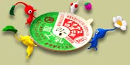
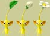

| 前作に引き続き、CMソングを担当しているのが『ストロベリー・フラワー』のふたり。今回のCMソング誕生には、どんなエピソードがあったのでしょうか。わたなべともえさんと友妻タケシさんに、結成から今回のCMソング制作に至るまでのお話を伺ってきました。 |
 |
| N.O.M もともとはどういうきっかけで結成されたんでしょう？ |
友妻 『ピクミン』のＣＭに関して色々な方法を模索していたんですよ。それでピクミンの主観でオリジナル曲をつくるという方法もあるなということで、ともえちゃんに声をかけました。以前、彼女のライブを見たことがあって、友人を通じてお互い紹介だけしてもらって、そのまま２年ほど連絡を取っていなかったんです。その時なぜかふと思い立って電話しました。
わたなべ 急に電話がかかってきたんですが、この業界はそういうものなので(笑)。大体の話を聞いて「いいよ」と返事をしたんです。
友妻 提案の締切まであと１日か２日くらいしかなく、日にちも差し迫っていたので、ふたりでそれぞれ部屋にこもって１時間くらいで何曲か作ったんです。そのうちの僕が作った曲が本採用になりました。
|
| N.O.M あっという間に曲ができたんですね。 |
友妻 こういうのは考えていいものができるかといえばそうでもなくて。この日もフットサルで２時間くらい走り回って、クタクタでユニフォーム着たまま、何も考えずにギターを手に取って曲作りに入ったんです。そこでフッと浮かんで10分くらいで作ったのが『愛のうた』でした。
わたなべ それまで私は自分が作った曲しか歌ったことがなかったんですが、『愛のうた』ではほかの人が混ざって出来上がる曲というのを初めて体験しました。「音楽ってこういう風に変化するんだな」っていうことがわかりました。
|
| N.O.M もともとどういった音楽活動をされていたんですか？ |
友妻 僕は学生時代に音楽活動をしていましたが、いまは忙しくて…。歌詞を作ったりして、友人のバンドに提供したりということはありますが、曲まではよほど余裕がないと作れないですね。
わたなべ 私はずっと京都でコケッシーズというバンド活動をしていました。そちらは解散してしまったんですが、いまはソロでベートルズという名義の活動と、あとほかの女の子と一緒にピジョンズというユニットを組んで、ライブ活動をしています。ただ現在は子育てがあるので、なかなか音楽活動に専念というわけにはいかないんですけどね。
|
| N.O.M 『愛のうた』は大ヒットしましたが、それによって世間の反応は変わりましたか？ |
友妻 僕は当時、銀髪だったんですごくわかりやすかったんです。焼肉屋さんに行った時にサインをくれと言われてサインしたら、それがロースターの真上に貼られたんですね。つぎにその店へ行ったら煙で真っ茶色になっていて軽く傷ついたりしたことが(笑)。
わたなべ 友妻さんがうまい具合に世間からカバーしてくれたり、産休というのもあってあまり生活面での変化はありませんでした。近所の人も全然気づかないみたいで…。入院中は看護師さんが気づいてたりしたみたいですが、病室の人たちは気を遣って気づかないふりをしてくれていたようです。「そもそも"ピクミンの人"がこんな大部屋にいるわけがない」とか言い合ってたらしいですが(笑)。
|

| N.O.M 今回の『種のうた』は前作とまったく違う方向性の歌みたいですね。 |
| 友妻 『ピクミン２』は個性がキーワードなので、５色のピクミンの『個性』にスポットを当てて歌詞を作りました。曲は『コガネムシ』を使わせてもらっています。原曲の短調(マイナーコード)を長調(メジャーコード)にアレンジして、小節の順番を入れ替えて編曲しています。原曲の『コガネムシ』はちょっとマイナー調で、若干ダークな印象がある曲なんですが、これに歌詞を載せてみたら意外にピッタリはまったんですよね。最初に歌詞が出来ていて、それにはまるシンプルなメロディーを探した結果です。 |
| N.O.M 実際に歌ってみていかがでしたか？ |
わたなべ スムーズに気持ちよく歌えました。私は原曲の方をちゃんと最後まで知らないんですが、それが逆に良かったのかもしれません。レコーディングも３〜４日くらいで終わっちゃいましたし。マキシシングルとして発売されるCDには『シャボン玉』という曲も入っているんですが、これをレコーディングする時に２歳の娘を連れて行ったら、歌を聴きながらスヤスヤと気持ち良さそうに眠ってしまいました。
友妻 『シャボン玉』は『コガネムシ』の作曲者である中山晋平先生とのコンビで多くの歌詞を作っている野口雨情先生が歌詞を書かれたものなんです。『コガネムシ』を使わせてもらうということでおふたりへの敬意を表して選曲しました。もともとこの曲は野口先生の愛児が亡くなって、そのレクイエム(鎮魂歌)として作られたという話があるんですよ。『愛のうた』は尽くす愛、無償の愛がテーマで、『種のうた』は個性の尊重、『シャボン玉』は命の儚さがテーマなんじゃないかと思っています。
|
| N.O.M 『愛のうた』のリミックスも入って３曲構成ですね。 |
| 友妻 これは以前発売されたものとは全く違うアレンジがしてあって、楽しく仕上がっています。３曲を塊としてCDで出すことで、世の中に対して何か意味があればいいなと思います。大げさに言う気はないんですが、いまは愛とか尊重とかそういったことが足りていないと思うんです。戦争だって相手を尊重する気持ちの欠如から起きるんですよね。だから、今回は特に聴いた後でプラスの感情が芽生えるように作ったつもりです。そういった部分まで感じ取ってもらえれば、とても嬉しいですね。 |
| N.O.M では、ユーザーへのメッセージをお願いします。 |
わたなべ 『ピクミン２』は芸術的でキレイなゲームだと思います。友達とぜひ遊んで下さい。曲の方はリラックスしたい時なんかにかけてくれるといいんじゃないかなと。子育て中のお母さんは『シャボン玉』を流すと、お子さんがお昼寝してくれますよ(笑)。CDを楽しみに待ってて下さいね。
友妻 プレイすると「やっつける、殺す」というような殺伐とした感じではなく、ピクミンに対していとおしく感じたり、ありがとうという気持ちになったりします。ピクミンは架空の生物でありながら『生き物』を感じられるので、とてもいいゲームだと思いますね。子供の情操教育みたいなものにもいいんじゃないかと思っています。プラスの感情、プラスの気持ちになれるので、CM曲ともどもよろしくお願いします。
|
|
|
|